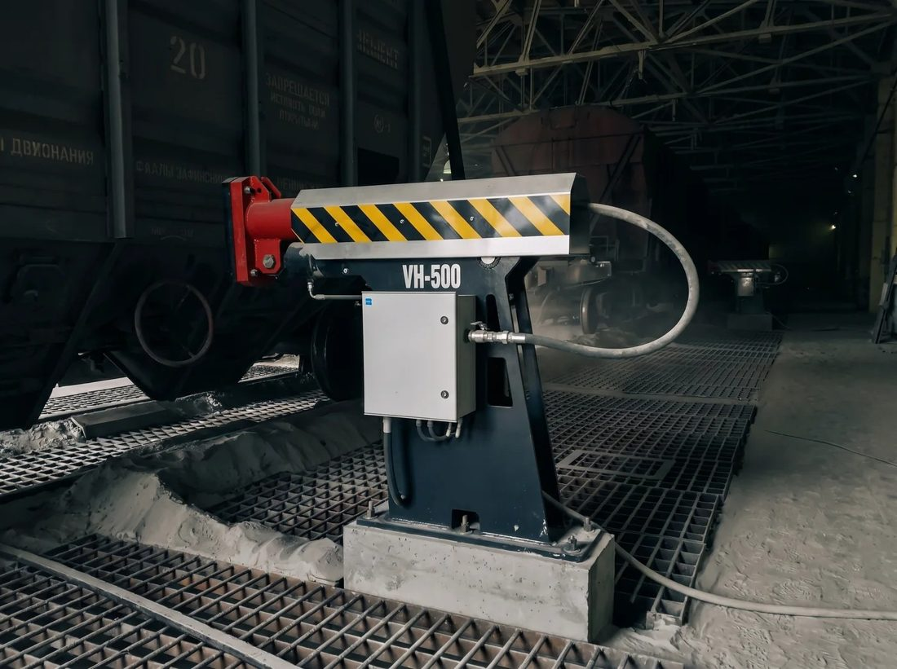
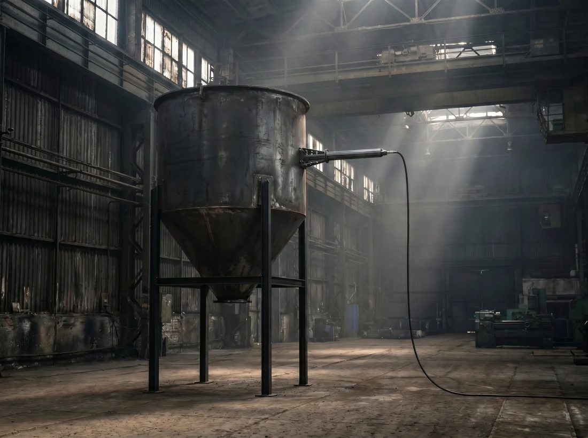
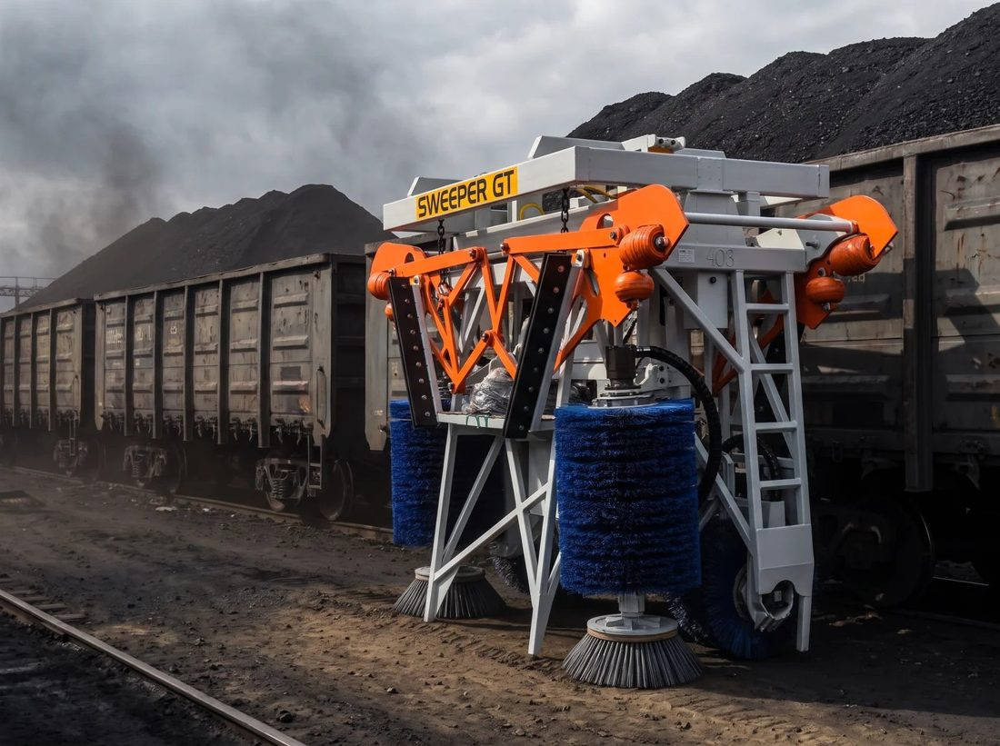
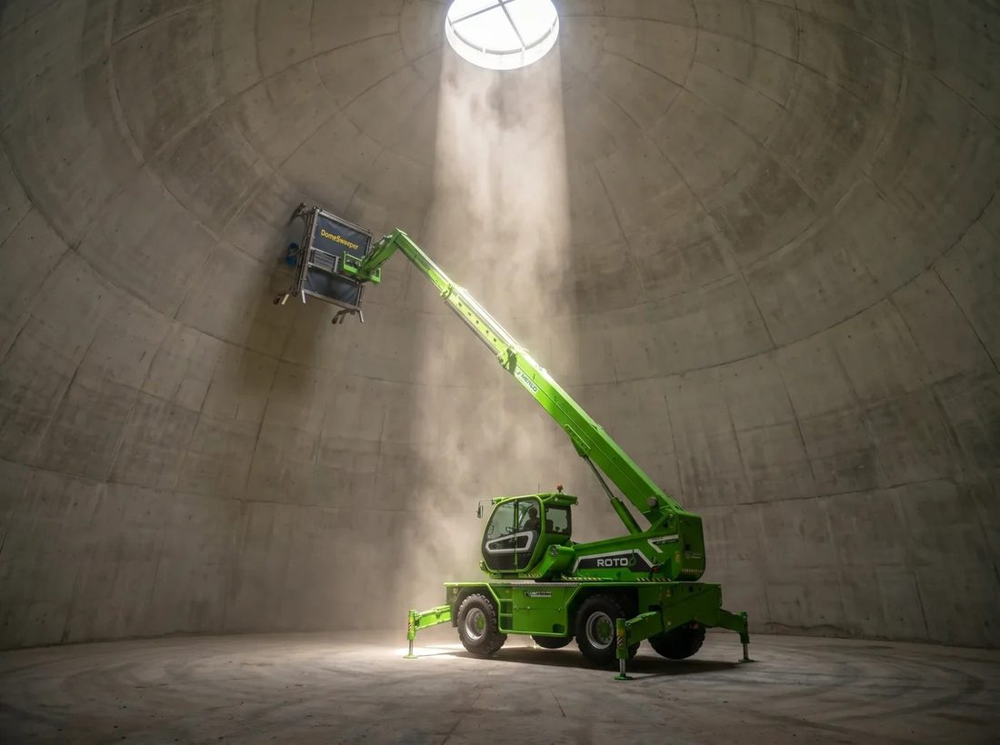
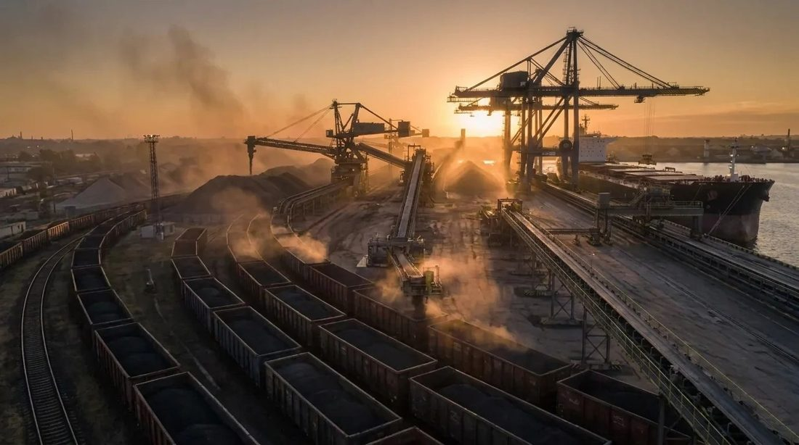

Виброразгрузчики, ударники для бункеров, машины для очистки вагонов и куполов
10 ч → 30 минСамый тяжёлый случай выгрузки
до 550 ДжЭнергия удара VH-500
3 минЦикл очистки вагона · Sweeper GT

Виброразгрузчики вагонов
VH-500 · VH-500T · VH-200 · VH-500R. Пневматические ударные виброразгрузчики: до 550 Дж на удар. Выгружают слежавшиеся, зависающие и слегка смёрзшиеся сыпучие грузы из вагонов-хопперов.

Rockhammer
RH-200 · RH-500. Пневматические ударники, разрушающие сводообразование и восстанавливающие поток в бункерах, силосах и течках. Автоматическая работа по программе или по сигналу датчика.

Sweeper GT
Щёточная машина для очистки открытых полувагонов с плоским дном от остатков угля, кокса и руды за 3–5 минут, без людей внутри вагона.

DomeSweeper в разработке
Щёточная очистка внутренних стен купольных хранилищ от налипшего материала без тяжёлого ручного труда.
ТЕХНИЧЕСКАЯ СПЕЦИФИКАЦИЯ
Виброразгрузчики вагонов: сравнение моделей
Пневматические виброразгрузчики VH для вагонов-хопперов

до 550 ДжЭнергия удара
7 барРабочее давление
12 месГарантия
Параметр
VH-200
VH-500
VH-500T
VH-500R
Энергия удара
200 Дж
550 Дж
550 Дж
550 Дж
Рабочее давление
7 бар
7 бар
7 бар
7 бар
Расход воздуха (на единицу)
2,5 м³/мин
2,8 м³/мин
2,8 м³/мин
2,8 м³/мин
Частота ударов
9 в секунду
6 в секунду
6 в секунду
6 в секунду
Точка воздействия
Разгрузочные люки
Рама / стенка вагона
Рама / стенка вагона
Вагоноопрокидыватель
Вылет ударной головы
—
700 мм
700 мм
По запросу
Масса (1 ед.)
180 кг
650 кг
850 кг
По запросу
Габариты, мм
1710 × 970 × 1170
1620 × 420 × 1560
1560 × 650 × 1550
По запросу
Количество на вагон
—
2
2
По запросу
Рабочая температура
−30…+40 °C (−40 °C — низкотемпературное исполнение)
−30…+40 °C (−40 °C — низкотемпературное исполнение)
−30…+40 °C (−40 °C — низкотемпературное исполнение)
−30…+40 °C (−40 °C — низкотемпературное исполнение)
Гарантия
12 месяцев
12 месяцев
12 месяцев
12 месяцев
Статус
Серийный
Серийный
Серийный
Внедряется
Значения подтверждены инженерным отделом. Габариты и масса отдельных конфигураций могут отличаться — точные цифры уточняйте при заказе.
Как выбрать модель
VH-500 — стандарт для вагонов-хопперов, два устройства на вагон.
VH-500T — поворотная головка 180°, одно устройство обслуживает два вагона на параллельных путях.
VH-200 — мобильный, воздействует на разгрузочные люки.
VH-500R — на вагоноопрокидыватель для вагонов, опрокидываемых целиком.
Общее
Низкочастотные мощные удары эффективнее высокочастотных вибраторов на влажных и промёрзших грузах.
Один оператор — с корпуса устройства или с пульта.
Установка выполняется силами заказчика.
Плановое обслуживание — силами заказчика.
ТЕХНИЧЕСКАЯ СПЕЦИФИКАЦИЯ
Виброразгружатель VH-500
Стандартный VH-500: до 550 Дж прямо на раму вагона, два устройства на вагон, один оператор. Обычный вагон — до 5 минут вместе с зачисткой.
до 550 ДжЭнергия удара
7 барРабочее давление
2,8 м³/минРасход воздуха (на одну единицу)
ТЕХНИЧЕСКИЕ ДАННЫЕ
Энергия удара
до 550 Дж
Рабочее давление
7 бар
Расход воздуха (на одну единицу)
2,8 м³/мин
Частота ударов
6 ударов в секунду
Длина вылета ударной головы
700 мм
Точка воздействия
Рама / стенка вагона
Монтаж
Бетонный фундамент или металлическое основание
Категория размещения
На улице
Количество на вагон
Два
Масса
650 кг
Габариты (Д×Ш×В)
1620 × 420 × 1560 мм
Рабочая температура
Стандарт −30…+40 °C; низкотемпературное исполнение до −40 °C (спецмасло, осушенный воздух)
Гарантия
12 месяцев
Коммерческий статус
Серийный продукт
ГДЕ ПРИМЕНЯЕТСЯ
Вагоны-хопперы с рамой для упора вибратора: минеральные удобрения, уголь, цемент, рудные концентраты и другие сыпучие грузы, которые слёживаются или слегка смерзаются в пути.
ЧЕСТНЫЕ ОГРАНИЧЕНИЯ
Если груз промёрз глубоко насквозь, вибрация его не выбьет — сначала нужна разморозка. При 2–3 вагонах в день профессиональное оборудование обычно не окупается.
ТЕХНИЧЕСКАЯ СПЕЦИФИКАЦИЯ
Виброразгружатель VH-500T
Поворотная версия VH-500: одно устройство обслуживает два вагона-хоппера на параллельных путях. Головка разворачивается на 180° вручную одним оператором.
до 550 ДжЭнергия удара
180°Поворот ударной головки
2,8 м³/минРасход воздуха (на одну единицу)
ТЕХНИЧЕСКИЕ ДАННЫЕ
Энергия удара
до 550 Дж
Рабочее давление
7 бар
Расход воздуха (на одну единицу)
2,8 м³/мин
Частота ударов
6 ударов в секунду
Длина вылета ударной головы
700 мм
Точка воздействия
Рама / стенка вагона
Поворот головки
180°, вручную с фиксацией
Категория размещения
На улице
Количество на вагон
Два
Масса
850 кг
Габариты (Д×Ш×В)
1560 × 650 × 1550 мм
Рабочая температура
Стандарт −30…+40 °C; низкотемпературное исполнение до −40 °C (спецмасло, осушенный воздух)
Гарантия
12 месяцев
Коммерческий статус
Серийный продукт
КАК РАБОТАЕТ
После выгрузки первого вагона поворотную головку вручную разворачивают на 180° и фиксируют в противоположном направлении — можно выгружать второй вагон на параллельном пути. Меньше затрат труда и времени.
ГДЕ ПРИМЕНЯЕТСЯ
Вагоны-хопперы с рамой для упора вибратора: удобрения, уголь, цемент, рудные концентраты и другие сыпучие грузы, которые слёживаются или слегка смерзаются в пути.
ТЕХНИЧЕСКАЯ СПЕЦИФИКАЦИЯ
Виброразгружатель VH-200 Mobile
Мобильный пневматический виброразгружатель: направляет силу непосредственно на разгрузочные люки вагона, где груз чаще всего зависает.
до 200 ДжЭнергия удара
9 ударов/сЧастота ударов
2,5 м³/минРасход воздуха
ТЕХНИЧЕСКИЕ ДАННЫЕ
Энергия удара
до 200 Дж
Рабочее давление
7 бар
Расход воздуха (на одну единицу)
2,5 м³/мин
Частота ударов
9 ударов в секунду
Точка воздействия
Разгрузочные люки вагона
Категория размещения
На улице
Масса
180 кг
Габариты (Д×Ш×В)
1710 × 970 × 1170 мм
Рабочая температура
Стандарт −30…+40 °C; низкотемпературное исполнение до −40 °C (спецмасло, осушенный воздух)
Гарантия
12 месяцев
Коммерческий статус
Серийный продукт
ПРЕИМУЩЕСТВА
Один из самых мощных вибраторов для люков вагонов — до 200 Дж на удар.
Низкая частота — 9 ударов в секунду — быстрая и эффективная выгрузка в сложных условиях.
Долговечность, минимальное обслуживание.
Подходит для вагонов с точками крепления вибратора и различных сыпучих грузов.
ГДЕ ПРИМЕНЯЕТСЯ
Вагоны-хопперы: быстрая выгрузка и очистка, сокращение простоя и повышение производительности на портовых терминалах и заводах.
ТЕХНИЧЕСКАЯ СПЕЦИФИКАЦИЯ
Виброразгружатель VH-500R
Решение на базе VH-500 для интеграции с роторным вагоноопрокидывателем: помогает максимально полно опорожнить опрокинутый вагон.
до 550 ДжЭнергия удара
7 барРабочее давление
2,8 м³/минРасход воздуха (на одну единицу)
ТЕХНИЧЕСКИЕ ДАННЫЕ
Энергия удара
до 550 Дж
Рабочее давление
7 бар
Расход воздуха (на одну единицу)
2,8 м³/мин
Частота ударов
6 ударов в секунду
Точка воздействия
Вагоноопрокидыватель
Категория размещения
На улице
Масса, габариты, количество
По запросу
Рабочая температура
Стандарт −30…+40 °C; низкотемпературное исполнение до −40 °C (спецмасло, осушенный воздух)
Гарантия
12 месяцев
Коммерческий статус
Внедряется
ЗАЧЕМ НУЖЕН
Роторные системы разгрузки очень эффективны, но при опрокидывании вагона часть груза — особенно влажного — может остаться внутри. Вибраторы VH-500R на вагоноопрокидывателе помогают опорожнить вагон как можно полнее.
ИСПОЛНЕНИЕ
Индивидуальное решение на базе VH-500, проектируется под вашу роторную систему. Параметры установки уточняются по запросу.
ТЕХНИЧЕСКАЯ СПЕЦИФИКАЦИЯ
Rockhammer RH-200 / RH-500
Пневматические ударники: разрушают своды и налипание, восстанавливают поток в бункерах, силосах, течках и желобах конвейеров — без кувалды.
280 ДжЭнергия удара RH-200
32Программы работы
7 барРабочее давление
СРАВНЕНИЕ МОДЕЛЕЙ
Параметр
RH-200
RH-500 (проект)
Энергия удара
280 Дж
550 Дж
Рабочее давление
7 бар
7 бар
Расход воздуха (на единицу)
2,5 м³/мин
2,9 м³/мин
Частота ударов
7 в секунду
5 в секунду
Питание
230 В
230 В
Потребляемая мощность
до 160 Вт
до 160 Вт
Точка воздействия
Стенка бункера / силоса
Стенка бункера / силоса
Устройств на блок управления
До 2
До 2
Масса (1 ед.)
70 кг
120 кг
Рабочая температура
−30…+40 °C (−40 °C — низкотемпературное исполнение)
−30…+40 °C (−40 °C — низкотемпературное исполнение)
Гарантия
12 месяцев
12 месяцев
Статус
Серийный
Проект
КАК РАБОТАЕТ
Мощные, но нечастые удары воздействуют на стенку, не разрушая сварные швы стальной конструкции.
Ударники привариваются в критических точках: бункеры, силосы, течки, желоба конвейеров.
32 предустановленные программы; с датчиком забивания система сама следит за потоком: забивание → серия ударов → поток восстановлен.
ЧЕСТНЫЕ ОГРАНИЧЕНИЯ
Монтаж только на стальные конструкции, не на бетонные силосы.
Из-за мощности перед установкой всегда оцениваются прочность конструкции и толщина стенок.
Рассчитан на крупные бункеры, силосы и конвейерные линии.
ТЕХНИЧЕСКАЯ СПЕЦИФИКАЦИЯ
Sweeper GT
Машина для очистки полувагонов и удаления остатков сыпучих грузов
≈ 4000 кгМасса установки
120–200 барГидравлическое давление
200–300 л/минРасход масла
ТЕХНИЧЕСКИЕ ХАРАКТЕРИСТИКИ
Масса установки
≈ 4000 кг
Гидравлическое давление
120–200 бар
Расход масла
200–300 л/мин
Диаметр щётки
640 мм
Гидравлические рукава
1", 2 шт.
Линия дренажа
Отдельная, в бак
Диапазон глубины вагона
2000–2560 мм
Диапазон ширины вагона
2840–3124 мм
Ресурс боковой щётки
5000 вагонов
Ресурс горизонтальной щётки
1500 вагонов
Ресурс угловой щётки
350–600 вагонов
Категория размещения
На улице
Габариты
3800 × 1600 × 3200 мм
Температура использования
−30…+50 °C
Гарантия
12 месяцев
КОМУ НУЖЕН SWEEPER GT?
Автоматический очиститель вагонов обрабатывает частицы остатков до 80 × 80 мм и слои толщиной до 80 мм.
Очищает внутренние поверхности вагонов за 3–5 минут (лучший подтверждённый цикл — 3 минуты).
Автоматически адаптируется к размерам кузова вагона и износу щёток.
Щётка из легко заменяемых элементов.
Сокращение трудозатрат: не нужны бригады ручной уборки.
ЧТО НУЖНО ОТ ВАШЕЙ ТЕХНИКИ
Подвешивается к стандартному манипулятору, которым выгружают уголь из полувагонов.
Гидравлика: 200–300 л/мин при 120–200 бар; две линии плюс отдельный дренаж в бак.
Узел соединения изготавливается под ваш манипулятор; управление из кабины: вкл/выкл.
Масса около 4000 кг — носитель должен с ней справляться.
Вылет стрелы и грузоподъёмность зависят от ваших вагонов и техники — уточняйте по модели манипулятора и размерам кузова.
ТЕХНИЧЕСКАЯ СПЕЦИФИКАЦИЯ
DomeSweeper
Щёточная очистка внутренних стен купольных хранилищ — в разработке
1,85 × 2,05 мЗона очистки за проход
до ≈ 50 мДиаметр купола
≈ 20 чКупол Ø 50 м, 1 машина (расчёт)
ТЕХНИЧЕСКИЕ ХАРАКТЕРИСТИКИ
Назначение
Очистка внутренних стен купольных хранилищ
Зона очистки за проход
1,85 × 2,05 м, скорость щётки регулируется
Приводы
Гидромоторы от гидравлики носителя
Регулировка
Вал щётки под постоянным давлением — компенсирует неровности стены и износ щёток
Наведение оператора
Электронная система позиционирования
Крепление
Быстросъёмное, на фронтальный погрузчик или телескопический погрузчик (вместо ковша)
Материал конструкции
Нержавеющая сталь
Подходящие купола
Диаметром до ≈ 50 м
Проект разработан, серийное производство ещё не начато; окончательные значения подтверждаются при подготовке производства. Время очистки — расчётная оценка.